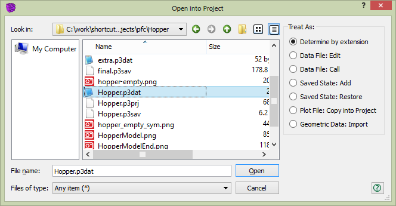

打开到项目 对话框
用于打开项目项的对话框在所有方面都与典型的 对话框行为相同。不过，此对话框还在右侧提供了一组程序专用的选项。


图 1：打开到项目 对话框。
在右侧的 视为 区域中，用户可以指定程序应如何响应该打开项目项的请求。这组控件使用户可以将 打开到项目 对话框当作一站式工具，用来访问程序中可能使用的几乎任何一种文件类型。
对于数据文件，所选文件可以在编辑器窗格中打开（“数据文件：编辑”），也可以在编辑器窗格中打开并执行（“数据文件：调用”）。
对于已保存模型状态文件，使用“已保存状态：添加”选项只会将该文件添加到项目中，此时它会出现在 i 项目（Project） 窗格中。已保存模型状态可以使用“已保存状态：恢复”选项添加到项目并进行恢复。
使用“绘图文件：复制到项目”选项会在新的 视图（View） 窗格中打开所请求的文件。
“几何数据：导入”选项会打开所请求的几何数据集（DXF、STL），并使其可供程序命令使用。
最后，默认选项“按扩展名确定”将尽可能根据所选文件的扩展名选择默认操作。数据文件的默认操作是“编辑”选项，已保存状态的默认操作是“添加”选项。
| 这些内容对您有帮助吗？… 版权与免责声明 | FLAC3D © 2019, Itasca | 原文更新于 2020 年 10 月 8 日 |